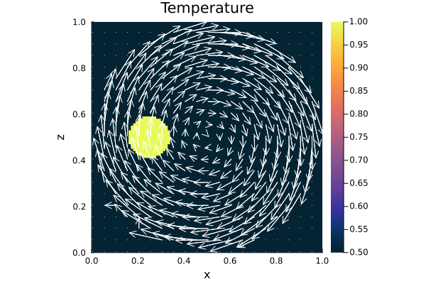

Advection Problem (2D)
This example evaluates the accuracy of the advection solvers implemented for two-dimensional problems. The available solvers are:
- upwind
- staggered leapfrog
- semi-lagrangian
- tracers
The first three solvers are implemented such that any property defined on the centroids (including ghost nodes) can be advected using interpolated centroid velocities from the staggered grid. Tracers are used to advect the initial temperature anomaly, but their internal properties are not updated. Instead, the temperature is interpolated onto the centroids at each time step. For more implementation details please see the documentation.
The initial temperature condition can be defined using one of the following anomalies:
- a rectangular block
- a Gaussian temperature distribution
- a circle
Note: The anomaly is here defined on the temperature field. However, one could also assume a similar density anomaly. This might even be more applicable for the tracer advection test.
Two different velocity fields can be used as initial conditions:
- a rigid body rotation
- an analytical shear cell velocity
The second velocity field is primarily intended for testing but may also serve as an initial condition in thermal convection problems.
In this example, rigid body rotation is the preferred initial velocity condition. Rigid body rotation provides a useful benchmark for testing advection scheme accuracy, as it applies pure rotation, displacing the anomaly without deformation. Thus, the shape and intensity of the anomaly should be the same as in the initial condition. Any deviation from the initial condition indicates either numerical diffusion (as in the upwind method) or interpolation error, particularly for sharp gradients.
Figure 1. Rigid Body Rotation. Initial setup for a rigid body rotation with a circular (dashed line) or rectangular (solid line) anomaly. The velocity (gray arrows) within the square model domain is set to zero outside the inner circle area (gray shaped) to avoid boundary effects.
Initial Velocity Condtion
The velocity is assumed to be constant and calculated on the staggered grid. For advection, the velocity on the cenroids is used, except for the tracers. The analytical velocity for the here given velocity fields is given as
Rigid Body Rotation
\[\begin{equation}\begin{split} v_x & = \frac{y_c-\frac{H}{2}}{H}, \\ v_y & = -\frac{x_c-\frac{L}{2}}{L}, \end{split}\end{equation}\]
and
Shear Cell
\[\begin{equation}\begin{split} v_x & = -\text{sin}\left(\pi \frac{x_v}{L}\right)*\text{cos}\left(\pi \frac{y_c}{H}\right), \\ v_y & = \text{cos}\left(\pi \frac{x_c}{L}\right)*\text{sin}\left(\pi \frac{y_v}{H}\right). \end{split}\end{equation}\]
First one needs to load the required packages:
using Plots, Interpolations
using GeoModBox.AdvectionEquation.TwoD, GeoModBox.Tracers.TwoD
using GeoModBox.InitialCondition
using Base.Threads
using PrintfIn the following one can define the advection scheme as well as the initial conditions. Additional some plot parameters are defined in the very beginning as well.
@printf("Running on %d thread(s)\n", nthreads())
save_fig = 1
# Define Numerical Scheme ============================================ #
# Advection ---
# 1) upwind, 2) slf, 3) semilag, 4) tracers
FD = (Method = (Adv=:tracers,),)
# -------------------------------------------------------------------- #
# Define Initial Condition =========================================== #
# Temperature ---
# 1) circle, 2) gaussian, 3) block
# Velocity ---
# 1) RigidBody, 2) ShearCell
Ini = (T=:circle,V=:RigidBody,)
# -------------------------------------------------------------------- #
# Plot constants ===================================================== #
Pl = (
inc = 5,
sc = 1.0e9,
Minc = 1,
Msz = 0.2,
)
# -------------------------------------------------------------------- #Now, one can define the geometry of the squared model domain.
# Model Constants ==================================================== #
M = (
xmin = 0.0,
xmax = 1.0,
ymin = 0.0,
ymax = 1.0,
)
# -------------------------------------------------------------------- #
```
In the following the numerical grid and their coordinates are defined.
```Julia
# Numerical Constants ================================================ #
NC = (
x = 100, # Number of horizontal centroids
y = 100, # Number of vertical centroids
)
NV = (
x = NC.x + 1, # Number of horizontal vertices
y = NC.y + 1, # Number of vertical vertices
)
Δ = (
x = (abs(M.xmin)+M.xmax)/NC.x,
y = (abs(M.ymin)+M.ymax)/NC.y,
)
# -------------------------------------------------------------------- #
# Grid =============================================================== #
x = (
c = LinRange(M.xmin + Δ.x/2.0, M.xmax - Δ.x/2.0, NC.x),
ce = LinRange(M.xmin - Δ.x/2.0, M.xmax + Δ.x/2.0, NC.x+2),
v = LinRange(M.xmin, M.xmax , NV.x)
)
y = (
c = LinRange(M.ymin + Δ.y/2.0, M.ymax - Δ.y/2.0, NC.y),
ce = LinRange(M.ymin - Δ.x/2.0, M.ymax + Δ.x/2.0, NC.y+2),
v = LinRange(M.ymin, M.ymax, NV.y),
)
x1 = (
c2d = x.c .+ 0*y.c',
v2d = x.v .+ 0*y.v',
vx2d = x.v .+ 0*y.ce',
vy2d = x.ce .+ 0*y.v',
)
x = merge(x,x1)
y1 = (
c2d = 0*x.c .+ y.c',
v2d = 0*x.v .+ y.v',
vx2d = 0*x.v .+ y.ce',
vy2d = 0*x.ce .+ y.v',
)
y = merge(y,y1)
# -------------------------------------------------------------------- #To visualize the result, the path and name for the gif animation is set. Additional, the memory for the required data fields is initialized.
# Animationsettings ================================================== #
path = string("./examples/AdvectionEquation/Results/")
anim = Plots.Animation(path, String[] )
filename = string("2D_advection_",Ini.T,"_",Ini.V,
"_",FD.Method.Adv)
# -------------------------------------------------------------------- #
# Initialize Array =================================================== #
D = (
T = zeros(Float64,(NC.x,NC.y)),
T_ex = zeros(Float64,(NC.x+2,NC.y+2)),
T_exo = zeros(Float64,(NC.x+2,NC.y+2)),
vx = zeros(Float64,(NV.x,NV.y+1)),
vy = zeros(Float64,(NV.x+1,NV.y)),
vxc = zeros(Float64,(NC.x,NC.y)),
vyc = zeros(Float64,(NC.x,NC.y)),
vc = zeros(Float64,(NC.x,NC.y)),
wt = zeros(Float64,(NC.x,NC.y)),
wtv = zeros(Float64,(NV...)),
Tmax = [0.0],
Tmin = [0.0],
Tmean = [0.0],
)
# -------------------------------------------------------------------- #Now, one can calculate the initial conditions. Here, the build-in functions for the initial temperature and velocity conditions, IniTemperature!() and IniVelocity!(), respectively, are used. For more informaion please refer to the documentaion. Following the velocity initialization, one can caluclate the velocity on the centroids.
# Initial Conditions ================================================= #
# Temperature ---
IniTemperature!(Ini.T,M,NC,Δ,D,x,y)
if FD.Method.Adv==:slf
D.T_exo .= D.T_ex
end
# Velocity ---
IniVelocity!(Ini.V,D,NV,Δ,M,x,y) # [ m/s ]
# Get the velocity on the centroids ---
@threads for i = 1:NC.x
for j = 1:NC.y
D.vxc[i,j] = (D.vx[i,j+1] + D.vx[i+1,j+1])/2
D.vyc[i,j] = (D.vy[i+1,j] + D.vy[i+1,j+1])/2
end
end
@. D.vc = sqrt(D.vxc^2 + D.vyc^2)
# -------------------------------------------------------------------- #Now, one needs to define the time parameter. Here, the maximum time is set such that the one full rotation of the anomaly is achieved.
# Time =============================================================== #
T = (
tmax = [0.0],
Δfac = 1.0, # Courant time factor, i.e. dtfac*dt_courant
Δ = [0.0],
)
T.tmax[1] = π*((M.xmax-M.xmin)-Δ.x)/maximum(D.vc) # t = U/v [ s ]
T.Δ[1] = T.Δfac * minimum((Δ.x,Δ.y)) /
(sqrt(maximum(abs.(D.vx))^2 + maximum(abs.(D.vy))^2))
nt = ceil(Int,T.tmax[1]/T.Δ[1])
# -------------------------------------------------------------------- #In case tracer are required one needs to initialize them in the following. For more information please refer to the documentation.
# Tracer Advection =================================================== #
if FD.Method.Adv==:tracers
# Tracer Initialization ---
nmx,nmy = 3,3
noise = 1
nmark = nmx*nmy*NC.x*NC.y
Aparam = :thermal
MPC = (
c = zeros(Float64,(NC.x,NC.y)),
v = zeros(Float64,(NV.x,NV.y)),
th = zeros(Float64,(nthreads(),NC.x,NC.y)),
thv = zeros(Float64,(nthreads(),NV.x,NV.y)),
)
MPC1 = (
PG_th = [similar(D.T) for _ = 1:nthreads()], # per thread
PV_th = [similar(D.wtv) for _ = 1:nthreads()], # per thread
wt_th = [similar(D.wt) for _ = 1:nthreads()], # per thread
wtv_th = [similar(D.wtv) for _ = 1:nthreads()], # per thread
)
MPC = merge(MPC,MPC1)
Ma = IniTracer2D(Aparam,nmx,nmy,Δ,M,NC,noise,0,0)
# RK4 weights ---
rkw = 1.0/6.0*[1.0 2.0 2.0 1.0] # for averaging
rkv = 1.0/2.0*[1.0 1.0 2.0 2.0] # for time stepping
# Interpolate on centroids ---
@threads for k = 1:nmark
Ma.T[k] = FromCtoM(D.T_ex, k, Ma, x, y, Δ, NC)
end
# Count marker per cell ---
CountMPC(Ma,nmark,MPC,M,x,y,Δ,NC,NV,1)
end
# -------------------------------------------------------------------- #Let's visualize the initial condition first.
# Visualize initial condition ======================================== #
if FD.Method.Adv==:tracers
p = heatmap(x.c,y.c,(D.T./D.Tmax)',color=:thermal,
aspect_ratio=:equal,xlims=(M.xmin, M.xmax),
ylims=(M.ymin, M.ymax),clims=(0.5, 1.0),
colorbar=true,layout=(1,2),subplot=1)
quiver!(p,x.c2d[1:Pl.inc:end,1:Pl.inc:end],
y.c2d[1:Pl.inc:end,1:Pl.inc:end],
quiver=(D.vxc[1:Pl.inc:end,1:Pl.inc:end].*Pl.sc,
D.vyc[1:Pl.inc:end,1:Pl.inc:end].*Pl.sc),
color="white",layout=(1,2),subplot=1)
heatmap!(p,x.c,y.c,MPC.c',color=:inferno,
aspect_ratio=:equal,xlims=(M.xmin, M.xmax), ylims=(M.ymin, M.ymax),
colorbar=true,clims=(0.0, 18.0),title=:"Marker per cell",
layout=(1,2),subplot=2)
else
p = heatmap(x.c , y.c, (D.T./D.Tmax)',
color=:thermal, colorbar=true, aspect_ratio=:equal,
xlabel="x", ylabel="z",
title="Temperature",
xlims=(M.xmin, M.xmax), ylims=(M.ymin, M.ymax),
clims=(0.5, 1.0))
quiver!(p,x.c2d[1:Pl.inc:end,1:Pl.inc:end],y.c2d[1:Pl.inc:end,1:Pl.inc:end],
quiver=(D.vxc[1:Pl.inc:end,1:Pl.inc:end].*Pl.sc,
D.vyc[1:Pl.inc:end,1:Pl.inc:end].*Pl.sc),
color="white")
end
if save_fig == 1
Plots.frame(anim)
elseif save_fig == 0
display(p)
end
# -------------------------------------------------------------------- #
Figure 2. Initial condition. Initial rigid body rotation setup including a circular shaped temperature anomaly. The temperature field is normalized by its maximum value so that the anomaly intensity equals one.
Now, one can start the time loop and the advection.
# Time Loop ========================================================== #
for i=2:nt
@printf("Time step: #%04d\n ",i)
# Advection ===
if FD.Method.Adv==:upwind
upwindc2D!(D.T,D.T_ex,D.vxc,D.vyc,NC,T.Δ[1],Δ.x,Δ.y)
elseif FD.Method.Adv==:slf
slfc2D!(D.T,D.T_ex,D.T_exo,D.vxc,D.vyc,NC,T.Δ[1],Δ.x,Δ.y)
elseif FD.Method.Adv==:semilag
semilagc2D!(D.T,D.T_ex,D.vxc,D.vyc,[],[],x,y,T.Δ[1])
elseif FD.Method.Adv==:tracers
# Advect tracers ---
AdvectTracer2D(Ma,nmark,D,x,y,T.Δ[1],Δ,NC,rkw,rkv,1)
# CountMPC(Ma,nmark,MPC,M,x,y,Δ,NC,i)
CountMPC(Ma,nmark,MPC,M,x,y,Δ,NC,NV,i)
# Interpolate temperature from tracers to grid ---
Markers2Cells(Ma,nmark,MPC.PG_th,D.T,MPC.wt_th,D.wt,x,y,Δ,Aparam,0)
D.T_ex[2:end-1,2:end-1] .= D.T
end
display(string("ΔT = ",((maximum(filter(!isnan,D.T))-D.Tmax[1])/D.Tmax[1])*100))
# Plot Solution ---
if mod(i,10) == 0 || i == nt
if FD.Method.Adv==:tracers
p = heatmap(x.c,y.c,(D.T./D.Tmax)',color=:thermal,
aspect_ratio=:equal,xlims=(M.xmin, M.xmax),
ylims=(M.ymin, M.ymax),clims=(0.5, 1.0),
colorbar=true,layout=(1,2),subplot=1)
quiver!(p,x.c2d[1:Pl.inc:end,1:Pl.inc:end],
y.c2d[1:Pl.inc:end,1:Pl.inc:end],
quiver=(D.vxc[1:Pl.inc:end,1:Pl.inc:end].*Pl.sc,
D.vyc[1:Pl.inc:end,1:Pl.inc:end].*Pl.sc),
color="white",layout=(1,2),subplot=1)
heatmap!(p,x.c,y.c,MPC.c',color=:inferno,
aspect_ratio=:equal,xlims=(M.xmin, M.xmax), ylims=(M.ymin, M.ymax),
colorbar=true,clims=(0.0, 18.0),title=:"Marker per cell",
layout=(1,2),subplot=2)
else
p = heatmap(x.c , y.c, (D.T./D.Tmax)',
color=:thermal, colorbar=true, aspect_ratio=:equal,
xlabel="x", ylabel="z",
title="Temperature",
xlims=(M.xmin, M.xmax), ylims=(M.ymin, M.ymax),
clims=(0.5, 1.0))
quiver!(p,x.c2d[1:Pl.inc:end,1:Pl.inc:end],
y.c2d[1:Pl.inc:end,1:Pl.inc:end],
quiver=(D.vxc[1:Pl.inc:end,1:Pl.inc:end].*Pl.sc,
D.vyc[1:Pl.inc:end,1:Pl.inc:end].*Pl.sc),
color="white")
end
if save_fig == 1
Plots.frame(anim)
elseif save_fig == 0
display(p)
end
end
end # End Time Loop
# -------------------------------------------------------------------- #In the end, the gif animation is generated.
# Save Animation ===================================================== #
if save_fig == 1
# Write the frames to a GIF file
Plots.gif(anim, string( path, filename, ".gif" ), fps = 15)
foreach(rm, filter(startswith(string(path,"00")), readdir(path,join=true)))
elseif save_fig == 0
display(plot(p))
end
# -------------------------------------------------------------------- #
Figure 3. Rigid Body Rotation using the Upwind Scheme.
Figure 4. Rigid Body Rotation using Tracers. Left: Temperature field interpolated from tracers onto the centroids. Right: Tracer density per cell. The simulation was performed on a single CPU.